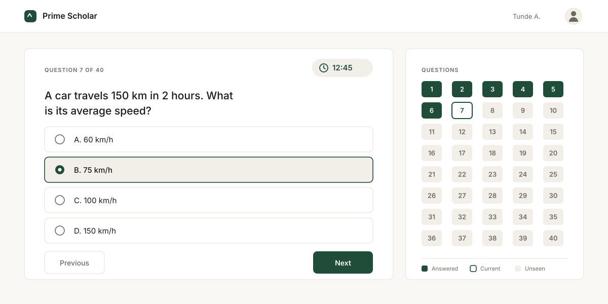

Six shipped projects. Filter by the kind of work, or read straight
through.
01
DevPing
Developer API hub, built African-first.
A hub of developer APIs with an African-first focus — pricing,
documentation, and latency that assume an African developer is
the primary user, not an afterthought. The Phone Intelligence
API is live today, with three more in development. Built on
Node.js and deployed serverlessly, so each API scales
independently.
A payments platform that replaces cash fares on campus transit
with tap-and-ride. Students top up a balance and tap to board;
operators get a live view of routes and revenue instead of a
cash box. Currently in beta with real riders. I work on the
frontend — UI components and the real-time views that operators
depend on.
AI crop disease diagnostics for West African farms.
A farmer photographs a diseased leaf and gets a diagnosis with
treatment guidance in return. Trained specifically on maize,
cassava, tomato, and pepper — the crops West African
smallholders actually grow, rather than the generic datasets
most plant models ship with. Built end to end, from the React
interface to the Supabase data layer and the Plant.ID
integration.
Computer-based testing platform for WAEC, NECO, and JAMB prep.
An exam-preparation centre needed to move students off paper
practice tests. I designed and built the platform end to end: a
React frontend and a Node.js backend where students sit timed
mock exams built from real recent past questions, get scored
instantly, and track their performance across attempts.
Administrators manage question banks, student accounts, and
result records through role-based access control, so staff only
see what their role allows. It is deployed and in production
with real students preparing for real exams.
Live site
Login required — client-managed accounts

05
TrustLayer
AI scam detection built for the Nigerian context.
Built for the BluechipTechnologies × DSN hackathon. Paste in a
suspicious message — a text, an email, a job offer — and it
returns a risk score with the specific language that triggered
it, so the warning is something you can actually evaluate rather
than a vague red flag. Uses Google's Gemini API for the natural
language analysis, tuned for the scam patterns that target
Nigerians specifically.
A client site for a luxury car dealership, built to make
inventory easy to browse and easy to enquire about. The
listings, vehicle detail views, and enquiry flow are all
designed around one goal — turning a browsing visitor into a
serious buyer. I handled the build and the deployment, and the
client maintains the inventory themselves.